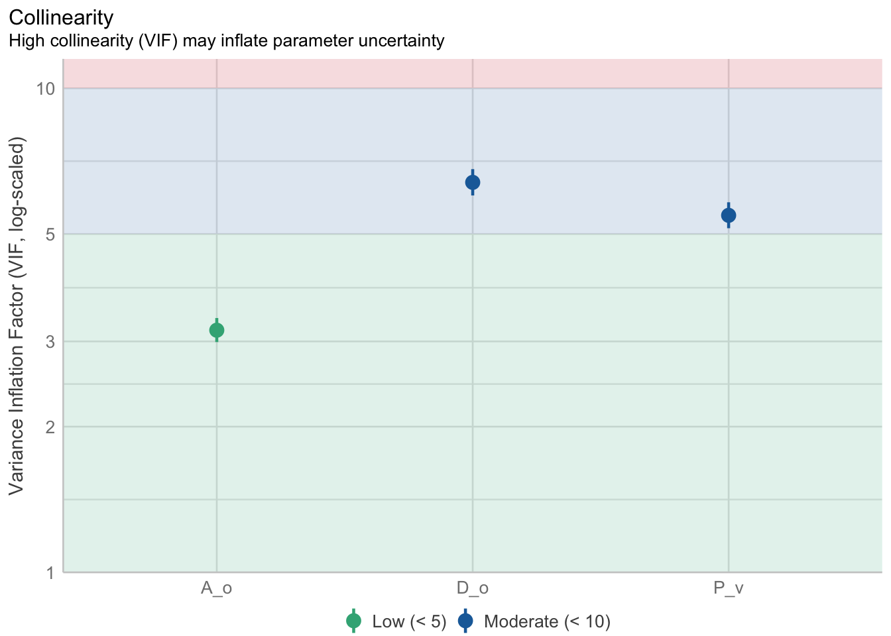

library(ggplot2)
library(GGally)
library(dplyr)
library(tidymodels)
library(performance)
library(vip)18 Regresiones múltiples
18.1 Librerías
18.2 Introducción
En el Capítulo 11 vimos una bastante extensiva introducción al modelo lineal, y en el Capítulo 13 vimos que la regresión polinomial era una extensión de este donde añadíamos “nuevas” pendientes que correspondían con potencias de nuestra variable independiente. Bueno, hoy vamos a introducir pendientes para otros predictores, y hablar de lo que eso implica. También veremos cómo podemos controlar la complejidad de nuestros modelos lineales, y ver cómo juzgar/evaluar adecuadamente un modelo de regresión múltiple, pues es más complejo que solo revisar sus supuestos.
18.2.1 Regresión Lineal Múltiple
La regresión lineal múltiple (RLM) es, en escencia, lo mismo que la regresión lineal simple: un modelo de aprendizaje supervisado donde se predice una variable numérica siguiendo un modelo lineal, solo que esta vez añadimos una serie de variables independientes. El modelo lineal múltiple queda dado entonces por:
\[ Y = \beta_0 + \beta_1X_1 + \beta_2X_2 + \cdots + \beta_nX_n + \epsilon \]
O podemos ponerlo en notación matricial, donde \(X\) es ahora una matriz que contiene \(m\) variables independientes y \(n\) observaciones (\(m \times n\)), y \(\beta\) es un vector de \(m\) coeficientes.
\[ Y = \alpha + X\cdot\beta + \epsilon \]
Nota
Tanto en la RLS como en la RLM las variables independientes pueden ser categóricas, ordinales y, por supuesto continuas, pero el cómo las integremos al modelo y su interpretación tienen bemoles que veremos más adelante.
No vamos a entrar en los detalles del álgebra lineal correspondientes porque los vimos en el Capítulo 14, lo que sí es “importante” saber es que, mientras en la RLS encontramos una línea que “mapea” los valores de \(x\) hacia \(y\), en la RLM encontramos un hiper-plano (una sábana) de \(m\) dimensiones. Nuestra intución como criaturas tridimensionales solo nos permite ver hasta tres dimensiones, y tendríamos algo como esto:

Dicho esto, vayamos a nuestros datos alojados en una dirección web. Estos datos cuentan con las siguientes variables:
- Longitud del organismo (
L_o) - Diámetro del organismo (
D_o) - Altura del organimso (
A_o) - Peso entero (
P_e) - Peso sin concha (
P_sc) - Peso de las vísceras (
P_v) - Peso de la cáscara (
P_c) - Edad (años) (
Edad)
# URL donde se alojan los datos, partida en dos segmentos para acortarla
abulon_url <- paste0("https://storage.googleapis.com/",
"download.tensorflow.org/data/abalone_train.csv")
# Descargar los datos en un objeto
abulon_dwn <- RCurl::getURL(abulon_url)
# Leer los datos descargados
abulon_data <- read.csv(text = abulon_dwn,
header = F)
# Nombres de columnas
var_names <- c("L_o", "D_o", "A_o", "P_e",
"P_sc","P_v", "P_c", "Edad")
colnames(abulon_data) <- var_names
head(abulon_data)El objetivo es construir un modelo de RLM que prediga la edad de los abulones a partir del resto de medidas. Podemos ver la relación entre cada par de variables. Para hacernos la vida más sencilla vamos a utilizar la función GGally::ggpairs():
GGally::ggpairs(abulon_data,
progress = F,
upper = "blank")
Si ponemos atención al último renglon es claro que hay una relación entre Edad y el resto de variables, pero también tenemos dos pequeños “problemas”:
- Dos individuos que tienen valores de
A_oque se alejan considerablemente del resto. - Como era de esperarse dados los nombres de las variables, algunas están altamente correlacionadas.
Por el momento ignoremos ambas cosas y ajustemos nuestro modelo. Los pasos a seguir son básicamente los mismos que seguimos en el Capítulo 17 con el bosque aleatorio, salvo peculiaridades propias de la regresión lineal. También entonces vamos a aprovechar para introducir formalmente el uso de tidymodels
18.2.1.1 Implementación
Los pasos a seguir son prácticamente los mismos qu
Dividir los datos en datos de entrenamiento y prueba. Si pusiste atención al enlace te darás cuenta de que los datos que descargamos son datos de prueba, por lo que esta vez nos saltaremos este paso.
Preprocesar los datos. En este caso no es “necesario” que nuestras variables estén en la misma escala, por lo que también vamos a saltarnos este paso; sin embargo, más adelate veremos que es recomendable y que cuando queremos controlar la complejidad del modelo sí se vuelve necesario. De cualquier manera (y para hacernos el hábito) vamos a especificar la receta, aunque no tenga ningún paso más que la fórmula:
# Formación de la receta
abulon_rec <- recipe(Edad~., data = abulon_data)
# Obtener parámetros para preprocesar
abulon_prep <- abulon_rec |> prep()
# Preprocesar los datos
abulon_juiced <- abulon_prep |> juice()- Crear el modelo. Ahora podemos especificar el modelo de regresión lineal múltiple
# Especificación de la regresión lineal
lm_spec <- linear_reg() |>
set_engine("lm") |>
set_mode("regression")
Nota
Si te das cuenta las únicas diferencias entre la especificación del bosque aleatorio que construimos en el Capítulo 17 y esta regresión múltiple es que como “motor” estamos utilizando lm, y que el “modo” del modelo es una regresión. En tidymodels solo hay que cambiar estos dos argumentos para aplicar cualquiera de los modelos que tienen una interface, los cuales puedes ver aquí.
- Formar un flujo de trabajo que aplique la receta de preprocesamiento de los datos y se la pase a la especificación del modelo:
lm_wf <- workflow() |>
add_recipe(abulon_rec) |>
add_model(lm_spec)- Ajustar el modelo. Aquí no tenemos hiperparámetros, por lo que saltaremos este paso, pero más adelante lo vamos a retomar. Por el momento solo ajustemos el modelo con los datos de prueba:
lm_fit <- lm_wf |> fit(data = abulon_data)- Ver el resumen. De nuevo, no tenemos hiperparámetros a optimizar, pero podemos ver la salida de la función
lmen el atributolm_fit$fit$fit$fit(sí, 3 vecesfit, no me preguntes por qué lo enterraron hasta allá). Aquí podríamos hablar de qué coeficientes son significativamente diferentes de 0, de si sus relaciones son positivas o negativas, darnos una idea de lo mal ajustado que está el modelo con el \(R^2\) y todo lo demás que vimos en el Capítulo 11. Las únicas diferencias en la interpretación es que ahora tenemos más parámetros, que ahoraMultiple R-squaredtiene sentido y que también vale la pena ver el resultado del ANOVA. La hipótesis de nulidad de ese ANOVA es que todos los parámetros son iguales a 0 (modelo nulo), y la alternativa que al menos uno es diferente. ¿Cuál o cuáles? Eso lo dan las pruebas de \(t\) de cada parámetro.
# Extraer la salida de la función lm
lm_form <- lm_fit$fit$fit$fit
summary(lm_form)
Call:
stats::lm(formula = ..y ~ ., data = data)
Residuals:
Min 1Q Median 3Q Max
-10.4264 -1.3563 -0.3701 0.9374 12.2263
Coefficients:
Estimate Std. Error t value Pr(>|t|)
(Intercept) 3.1004 0.2939 10.551 < 2e-16 ***
L_o -1.7735 2.0821 -0.852 0.394
D_o 13.5051 2.5404 5.316 1.13e-07 ***
A_o 11.1089 1.6075 6.911 5.77e-12 ***
P_e 9.9224 0.8287 11.973 < 2e-16 ***
P_sc -20.8791 0.9265 -22.536 < 2e-16 ***
P_v -10.7353 1.4591 -7.357 2.35e-13 ***
P_c 8.0065 1.2375 6.470 1.13e-10 ***
---
Signif. codes: 0 '***' 0.001 '**' 0.01 '*' 0.05 '.' 0.1 ' ' 1
Residual standard error: 2.184 on 3312 degrees of freedom
Multiple R-squared: 0.5369, Adjusted R-squared: 0.5359
F-statistic: 548.4 on 7 and 3312 DF, p-value: < 2.2e-16- Comprobar los supuestos. Aquí llevaríamos el ajuste de los hiperparámetros a mejores valores, pero como no tenemos podemos aprovechar para comprobar los supuestos. Vemos que nuestro posterior predictive check no está del todo bien, el grafico de linealidad tampoco, el de homogeneidad de varianzas menos, tenemos una observación altamente influyente, el gráfico de normalidad está bastante mal, y tenemos un gráfico adicional: el gráfico de colinealidad, que tampoco se ve bien. ¿Qué es la colinealidad? El grado de correlación que hay entre nuestros predictores, pero ahorita vemos más de eso.
performance::check_model(lm_form)
- Revisar la importancia de variables: A diferencia de lo que vimos en el Capítulo 17 sobre la importancia de variables en bosques aleatorios, en modelos lineales qué variable es más importante usualmente se define por el valor absoluto del estadístico \(t\), de modo que entre más grande sea, más importante es la variable:
lm_spec |>
set_engine("lm") |>
fit(Edad~.,
data = juice(abulon_prep)) |>
vip(geom = "point") +
geom_point(color = "dodgerblue4") +
labs(title = "Importancia de variables",
subtitle = "Modelo: RLM") +
theme_bw()
Tip
La librería vip tiene más funciones que solo vip. Te recomiendo que revises su viñeta para darte una idea de qué puedes hacer.
- Verificar que el modelo no esté sobreajustado. Si bien es cierto que nuestro ajuste general no es muy bueno, ¿qué pasa con los datos de prueba? Como no hicimos la separación entrenamiento-prueba no podemos utilizar el mismo método que usamos con el bosque aleatorio, pero sí que podemos obtener nuestras medidas de ajuste manualmente con ayuda de la función
predict. Primero, bajemos los datos de prueba, luego predigamos las edades observadas utilizando nuestro modelo, y luego calculemos el RMSE y el \(R^2\) con las funcionesyardstick::rmseyyardstick::rsq.
# Descargar datos de prueba
abulon_testd <- paste0("https://storage.googleapis.com/",
"download.tensorflow.org/data/abalone_test.csv")
download <- RCurl::getURL(abulon_testd)
abulon_test <- read.csv(text = download, header = F)
colnames(abulon_test) <- var_names
# Predecir edades en los datos
abulon_test["pred"] <- predict(lm_form, abulon_test)
# Calcular rmse y r2 y juntar los resultados
rbind(
abulon_test |> yardstick::rmse(truth = Edad,
estimate = pred),
abulon_test |> yardstick::rsq(truth = Edad,
estimate = pred)
)El RMSE es mayor en los datos de prueba que en los de entrenamiento (2.35 vs. 2.18), mientras que el \(R^2\) es mayor en los datos de entrenamiento (0.53 vs. 0.48). En cualquiera de los casos no tenemos una diferencia particularmente grande, por lo que no podemos asegurar que el modelo se encuentre sobreajustado (la diferencia es del 5-7% con respecto a los datos de entrenamiento) y podemos decir que el modelo generaliza “bien”. ¿Por qué “bien”? Porque el valor de \(R^2\) no es precisamente alentador, pero no hay una diferencia grande entre los datos entre los que fue entrenado y datos que nunca vio; es decir, el modelo está sub ajustado y utilizarlo para predicciones sería arriesgado.
Nota
Para variar, ¿qué tanto es tantito? Pues resulta que si hacemos una partición entrenamiento prueba, hacemos validación cruzada, etc., etc., nuestro valor para los datos de prueba depende de cómo se haya hecho esa partición. Si tenemos mala suerte podemos terminar con pésimas métricas de evaluación, mientras que si tenemos suerte pueden ser excelentes, solo por un proceso aleatorio. Es por eso que es importante realizar validación cruzada, o tener datos que sean realmente de prueba. De cualquier manera, una diferencia hacia arriba o hacia abajo del 5-10% puede ser dada por “buena”. Qué tan estricto tenga que ser el criterio dependerá, para variar, de tu problema, tus objetivos, y qué consecuencias tenga para ti el cometer un error.
¿Y para interpretación? Pues si no podemos hacer buenas predicciones no tiene caso hacer interpretaciones; sin embargo, veamos por qué, aún si tuviera un buen poder predictivo, no podemos hacer una buena interpretación. Volvamos a ver los gráficos diagnósticos:
performance::check_model(lm_form)
Arriba mencionamos todos los problemas que tiene el modelo, evidenciados por todos los gráficos, pero no hemos hablado a detalle de la colinealidad. En la RLM tenemos un supuesto adicional a los de la RLS: No colinealidad de los predictores; es decir, que las variables independientes sean independientes entre sí (no pueden tendría caso que fueran independientes de la variable a predecir, ¿o sí?). La explicación tiene varios bemoles. Bueno, en realidad es uno, pero hay que ver algo de álgebra.
18.2.1.2 Supuesto de no colinealidad
La multicolinealidad (i.e.,tener dos o más predictores correlacionados) puede ser entendida como darle al modelo información redundante; es decir, que aquellos predictores correlacionados están aportando “la misma” información para predecir la variable de interés. Vuelve al gráfico de pares y verás que hay relaciones aparentes no solo entre Edad y los predictores, sino también entre varios pares de predictores. Esto nos lleva a que cuando el coeficiente de uno de ellos aumente, el otro aumente o disminuye según si la correlación entre ellos es negativa o positiva, pero hagámos el ejercicio algebráico. Nuestro modelo está declarado de la siguiente manera, donde \(L\) es la longitud, \(D\) el diámetro, \(P\) el peso (\(_E\): entero, \(_{SC}\): sin concha):
\[ Edad = \alpha + \beta_1 L_o + \beta_2 D_o + \beta_3 P_e + \beta_4 P_{sc} + \dots + \epsilon \]
Asumamos que dos variables altamente correlacionadas, por ejemplo \(P_e\) y \(P_{sc}\). Es más, asumamos que no solo son equivalentes, sino matemáticamente idénticas. En ese escenario estas variables podemos resumirlas en una sola que se llame \(Peso\), y reescribir el modelo como:
\[ Edad = \alpha + \dots + (\beta_3 + \beta_4)*Peso + \dots \]
Resulta entonces que es la suma de \(\beta_3\) y \(\beta_4\) la que afecta a \(Edad\), y no sus valores separados. Dicho de otra manera, podemos hacer una de ellas cada vez más pequeña, siempre que tengamos la otra. En la práctica, entonces, no tenemos dos variables y, por lo tanto, tampoco tenemos dos parámetros. Un caso extremo como este, con una correlación prefecta, nos lleva a un modelo indeterminado; es decir, \(\beta\) podría tomar cualquier valor en el intervalo \((-\infty, \infty)\). Este no es nuestro caso, pero es la razón de ser del “variables independientes”.
¿Qué implicaciones tiene esto? Depende de cuál sea nuestro interés. Si nos interesa solamente la predicción, ninguna, pues esa correlación entre los parámetros es solamente una consecuencia de nuestros datos y el modelo. La historia cambia si nos interesa explicar el modelo, pues en un modelo de RLM cada parámetro tiene sentido solo en el contexto de los otros. Como te imaginarás, y como vimos arriba, en el mundo real las correlaciones entre los predictores no son extrañas. ¿Qué tan fuerte debe de ser la correlación entre dos o más variables para ser un problema? \(r = 0.85\). Nah, mentira, para variar no hay un criterio o número mágico, pero podemos revisar el Factor de Inflación de la Varianza (VIF).
Advertencia
No importa la correlación “cruda” entre los predictores, sino qué es lo que pasa dentro el modelo. Recuerda, aquí estamos analizando la pertinencia del modelo y, por lo tanto, de los coeficientes que lo conforman. Si cada parámetro/coeficiente tiene sentido solo en el contexto de los otros, no tiene sentido hacer un análisis a priori. Siempre buscamos la colinealidad entre predictores en el contexto del modelo.
¿Por qué es esto así? Si el caso extremo de una correlación perfecta entre los predictores es que \(\beta\) pueda estar entre \((-\infty, \infty)\) podemos inferir que, entre mayor sea la correlación entre los parámetros, mayor es la varianza en su estimación, lo cual se traduce en tamaños de efectos (valores de pendientes, vamos) pequeños y errores estándares grandes. El VIF, entonces, es una medida de qué tanto incrementa la varianza del modelo por tener un parámetro dado; es decir, vamos a tener un VIF por parámetro/coeficiente. Este VIF es un factor, por lo que es un término multiplicativo. Si los predictores son perfectamente independientes entre sí vamos a tener VIFs exactamente iguales a 1, e irán aumentando conforme cada coeficiente esté correlacionado con otro. Aquí sí tenemos una guía de qué tanto es tantito (James et al., 2013): Valores de menos de 5 son correlaciones bajas entre ese predictor y los demás, 5-10 indican correlaciones moderadas, y >10 son correlaciones muy altas e inaceptables. Regresemos a nuestro ejemplo:
rlm_colin <- performance::check_collinearity(lm_form)
plot(rlm_colin)Vaya, estamos en una situación bastante complicada, pues solamente el coeficiente de la altura carece de una correlación importante con otro(s). Los demás están entre 20 para P_v y hasta más de 100 para P_e, lo cuál nos lleva a la pregunta ¿qué hacemos? Tenemos algunas alternativas:
- La más simple y, por lo tanto, mi primera opción: simplemente eliminar una (o más) variables del análisis. ¿Cuál? No importa, la información es redundante. Puede ser por simple conveniencia, y eliminar aquella(s) de la(s) que sepamos menos, o que sea(n) más difícil(es) de interpretar o medir.
- Posiblemente la que menos me gusta: Crear una nueva variable. Esto puede ser tan simple como obtener el promedio de las variables redundantes (ojo con las escalas), o incluso aplicar una técnica de reducción de dimensionalidad como el ACP. ¿El problema? Que ahora tenemos combinaciones de nuestras variables originales, por lo que la interpretación, que es lo que estábamos buscando, se va por la borda.
- Incluir términos de interacción. Sí, como la interacción que vimos en el ANOVA factorial, pero entraremos en más detalles más adelante.
- Aplicar un modelo de regresión regularizado. Estos modelos, que veremos más adelante, permiten penalizar los coeficientes en función de su “importancia” para el modelo, de modo que variables menos informativas van a tener coeficientes más pequeños (regresión Ridge) o incluso hacerse cero y ser eliminadas del modelo (regresión Lasso).
Comprobemos lo primero. Por fines de practicidad (y didácticos) utilizando la función lm, y quedémonos únicamente con la altura, el diámetro, y el peso:
lm_nocol <- lm(Edad~ A_o + D_o + P_v, data = abulon_data)
summary(lm_nocol)
Call:
lm(formula = Edad ~ A_o + D_o + P_v, data = abulon_data)
Residuals:
Min 1Q Median 3Q Max
-20.7115 -1.5972 -0.6611 0.8557 15.4888
Coefficients:
Estimate Std. Error t value Pr(>|t|)
(Intercept) 1.5117 0.2814 5.372 8.34e-08 ***
A_o 19.5388 1.8630 10.488 < 2e-16 ***
D_o 15.8126 1.1295 14.000 < 2e-16 ***
P_v -4.2458 0.9490 -4.474 7.93e-06 ***
---
Signif. codes: 0 '***' 0.001 '**' 0.01 '*' 0.05 '.' 0.1 ' ' 1
Residual standard error: 2.577 on 3316 degrees of freedom
Multiple R-squared: 0.3544, Adjusted R-squared: 0.3538
F-statistic: 606.7 on 3 and 3316 DF, p-value: < 2.2e-16De entrada, los errores estándar de D_o y P_v se hicieron más pequeños, y nuestro RSE (2.57) no fue mucho mayor que en el caso anterior (2.18); es decir, ahora nuestro modelo se equivoca (en promedio) 0.39 años más que antes. Esto, en el gran esquema de las cosas puede no ser “tan” grave, o al menos no tanto como podría hacerlo parecer el \(R^2\) múltiple de 0.35. ¿Por qué no confiar ciegamente/únicamente en el \(R^2\)? Porque tiene una peculiaridad: sigue creciendo conforme se le agregan variables al modelo, independientemente de si estas son informativas o no.
Si revisamos nuestros VIF tenemos ahora valores con los que podemos vivir:
rlm_nocolin <- performance::check_collinearity(lm_nocol)
plot(rlm_nocolin)
Ahora sí podemos interpretar adecuadamente nuestro modelo, el problema es la capacidad de predicción. Si esta es “suficientemente buena” o no es algo que depende enormemente de nuestro conocimiento del problema. ¿Es un error de 2.57 años grande? ¿Es aceptable? Eso es algo que tú tienes que decidir en función de las consecuencias. Imagina que hay una regulación por edad sobre este recurso, y que organismos que tengan menos de 5 años no pueden ser extraídos. ¿Pesa ese error promedio de 2.57 años? ¿Qué pasa si el límite se va hasta los 11 años? No hay respuestas universales. Decidir si un modelo es útil o no depende de nosotros, y no solo del valor de \(R^2\). Dicho esto, vayamos a la siguiente alternativa: incluir interacciones en el modelo.
18.2.1.3 Interacciones
Pero antes, ¿qué diablos representa una interacción? En el Capítulo 10 hablábamos que indicaban que un factor dependía de otro, y aquí es exactamente eso: una interacción representa una relación de dependencia/correlación/moderación entre los predictores. En una RLM sin interacciones un cambio unitario en \(X_i\) resulta en un cambio constante (\(\beta\)) en \(Y\) al mantener fijos los valores del resto de variables. En casos con multicolinealidad vimos que esto no es el caso, y que puede ser que los cambios en en \(X_1\) que afectan a \(y\) están siendo modulados por \(X_2\). Un ejemplo cotidiano es la ingesta de medicamentos y el consumo de bebidas alcohólicas (no lo hagas). El medicamento puede no tener reaccciones adversas tomado solo, pero tomar bebidas alcoholicas puede hacer que su efecto se reduzca dramáticamente o, incluso, comprometer la salud del paciente.
Hasta el momento en nuestro ejemplo de los abulontes todos nuestros predictores contribuyen de forma aditiva (independiente) a la predicción de la variable dependiente. Si queremos reflejar casos como el ejemplo de los medicamentos y las bebidas alcohólicas es necesario, entonces, incluir términos que no sean aditivos. Usualmente la interacción se incluye con términos multiplicativos (en el Capítulo 19 veremos algunas otras formas de hacerlo), que en un caso con dos variables se vería de la siguiente manera:
\[ Y = \alpha + \beta_1*x_1 + \beta_2*x_2 + \beta_3*(x_1*x_2) + \epsilon \]
Es decir, el nuevo coeficiente (\(\beta_3\)) multiplica a una nueva variable que es el producto de dos (o más) variables que interactúan. Aunque incluir estos términos puede ayudar con la capacidad predictiva del modelo, introducen un desafío para su interpretación. Re-escribamos la ecuación de arriba:
- Para la pendiente de \(x_1\):
\[ Y = \alpha + (\beta_1 + \beta_3*x2)*x1 + \beta_2*x_2 \]
- Para la pendiente de \(x_2\):
\[ Y = \alpha + \beta_1*x_1 + (\beta_2 + \beta_3*x1)*x_2 \]
Nota
¿De dónde salieron estas ecuaciones? De expandir el término \(\beta_3*(x_1*x_2)\) y luego simplificar para cada variable.
Esto nos muestra que: - El término de interacción puede ser entendido como un modelo lineal, por lo que tenemos un modelo lineal dentro de otro. - La interacción es simétrica, de modo que podemos pensar en la pendiente de \(x_1\) como una función de \(x_2\) y, al mismo tiempo, la pendiente de \(x_2\) como una función de \(x_1\)
Estas interacciones tienen otro par de peculiaridades: - En una RLM sin interacciones obtenemos un hiperplano como el que vimos en la Figura 18.1; sin embargo, las interacciones permiten curvar ese espacio, pues las pendientes ya no son constantes, sino funciones de otra variable. - El coeficiente \(\beta_1\) describe la influencia del predictor \(x_1\) solo cuando \(x_2 = 0\). Esto es porque, en ese caso, \(\beta_3*x_2 = 0\), y el término de \(x_1\) se reduce a \(\beta_1*x_1\). Por simetría, ese razonamiento aplica a \(\beta_2\). ¿En Español? No podemos interpretar un efecto de primer orden (sin interacción) si esa variable está interactuando con otra, pues ese efecto en sí mismo solo es verdad cuando la otra variable es 0.
Veamos qué pasa si incluimos un modelo con todas las interacciones (más adelante veremos cómo incluirlas en tidymodels:
lm_inter <- lm(Edad~L_o*D_o*A_o*P_e*P_sc*P_v*P_c, data = abulon_data)
summary(lm_inter)
Call:
lm(formula = Edad ~ L_o * D_o * A_o * P_e * P_sc * P_v * P_c,
data = abulon_data)
Residuals:
Min 1Q Median 3Q Max
-10.7066 -1.1922 -0.2471 0.8796 11.6235
Coefficients:
Estimate Std. Error t value Pr(>|t|)
(Intercept) 2.002e+00 4.746e+00 0.422 0.673140
L_o 6.259e+00 5.006e+01 0.125 0.900518
D_o 4.961e+00 7.566e+01 0.066 0.947729
A_o -3.186e+01 9.720e+01 -0.328 0.743075
P_e -1.749e+02 1.925e+02 -0.909 0.363549
P_sc 2.291e+02 3.177e+02 0.721 0.470868
P_v 6.777e+02 4.532e+02 1.495 0.134918
P_c -5.851e+02 3.287e+02 -1.780 0.075180 .
L_o:D_o 3.656e+01 2.132e+02 0.172 0.863823
L_o:A_o 3.183e+01 7.987e+02 0.040 0.968211
D_o:A_o 5.674e+02 1.211e+03 0.469 0.639276
L_o:P_e 2.592e+03 1.167e+03 2.222 0.026336 *
D_o:P_e -3.299e+03 1.676e+03 -1.969 0.049062 *
A_o:P_e 4.118e+03 2.479e+03 1.661 0.096757 .
L_o:P_sc -9.840e+02 1.373e+03 -0.717 0.473635
D_o:P_sc 1.054e+03 2.412e+03 0.437 0.662293
A_o:P_sc -4.279e+03 4.159e+03 -1.029 0.303658
P_e:P_sc 7.105e+02 1.223e+03 0.581 0.561381
L_o:P_v -5.725e+03 2.343e+03 -2.443 0.014613 *
D_o:P_v 3.355e+03 3.476e+03 0.965 0.334488
A_o:P_v -1.443e+04 5.663e+03 -2.548 0.010879 *
P_e:P_v 2.118e+03 2.426e+03 0.873 0.382722
P_sc:P_v -3.144e+03 5.171e+03 -0.608 0.543194
L_o:P_c -2.114e+03 1.887e+03 -1.120 0.262762
D_o:P_c 8.248e+03 2.488e+03 3.316 0.000925 ***
A_o:P_c 5.782e+03 2.368e+03 2.441 0.014684 *
P_e:P_c -5.773e+03 2.448e+03 -2.358 0.018416 *
P_sc:P_c -4.737e+02 5.639e+03 -0.084 0.933053
P_v:P_c 1.683e+04 7.571e+03 2.223 0.026257 *
L_o:D_o:A_o -2.409e+03 2.265e+03 -1.064 0.287583
L_o:D_o:P_e 2.481e+01 1.654e+03 0.015 0.988032
L_o:A_o:P_e -2.213e+04 8.755e+03 -2.527 0.011545 *
D_o:A_o:P_e 1.819e+04 1.111e+04 1.637 0.101694
L_o:D_o:P_sc -3.465e+02 2.744e+03 -0.126 0.899513
L_o:A_o:P_sc 1.121e+04 1.238e+04 0.906 0.365124
D_o:A_o:P_sc -5.928e+03 1.842e+04 -0.322 0.747664
L_o:P_e:P_sc -3.411e+03 2.320e+03 -1.470 0.141631
D_o:P_e:P_sc 3.812e+03 3.480e+03 1.096 0.273371
A_o:P_e:P_sc -1.707e+03 8.897e+03 -0.192 0.847848
L_o:D_o:P_v 6.229e+03 4.714e+03 1.321 0.186515
L_o:A_o:P_v 5.777e+04 1.899e+04 3.043 0.002362 **
D_o:A_o:P_v 1.674e+03 2.660e+04 0.063 0.949829
L_o:P_e:P_v -7.235e+03 6.306e+03 -1.147 0.251330
D_o:P_e:P_v -8.467e+02 6.236e+03 -0.136 0.891996
A_o:P_e:P_v -8.950e+03 1.625e+04 -0.551 0.581831
L_o:P_sc:P_v 1.359e+04 1.265e+04 1.074 0.282801
D_o:P_sc:P_v -8.907e+03 1.474e+04 -0.604 0.545736
A_o:P_sc:P_v 6.483e+03 3.954e+04 0.164 0.869786
P_e:P_sc:P_v -4.559e+03 3.824e+03 -1.192 0.233322
L_o:D_o:P_c -7.834e+03 3.172e+03 -2.470 0.013566 *
L_o:A_o:P_c 1.383e+04 1.279e+04 1.081 0.279776
D_o:A_o:P_c -6.052e+04 1.628e+04 -3.717 0.000205 ***
L_o:P_e:P_c 1.186e+04 4.436e+03 2.673 0.007561 **
D_o:P_e:P_c 1.310e+04 6.151e+03 2.130 0.033243 *
A_o:P_e:P_c 1.963e+04 1.428e+04 1.375 0.169352
L_o:P_sc:P_c -3.123e+03 1.062e+04 -0.294 0.768758
D_o:P_sc:P_c 4.724e+02 1.782e+04 0.027 0.978853
A_o:P_sc:P_c 1.404e+04 3.529e+04 0.398 0.690787
P_e:P_sc:P_c -9.506e+03 5.105e+03 -1.862 0.062672 .
L_o:P_v:P_c -1.970e+04 1.775e+04 -1.110 0.267102
D_o:P_v:P_c -6.260e+04 2.193e+04 -2.854 0.004342 **
A_o:P_v:P_c -9.779e+04 4.492e+04 -2.177 0.029548 *
P_e:P_v:P_c 8.728e+03 1.055e+04 0.827 0.408347
P_sc:P_v:P_c 5.037e+04 3.579e+04 1.407 0.159463
L_o:D_o:A_o:P_e 6.729e+03 1.211e+04 0.556 0.578427
L_o:D_o:A_o:P_sc 7.377e+02 2.364e+04 0.031 0.975108
L_o:D_o:P_e:P_sc -5.170e+02 3.764e+03 -0.137 0.890738
L_o:A_o:P_e:P_sc 1.599e+04 1.497e+04 1.068 0.285801
D_o:A_o:P_e:P_sc -2.611e+04 2.197e+04 -1.188 0.234740
L_o:D_o:A_o:P_v -8.063e+04 3.351e+04 -2.406 0.016167 *
L_o:D_o:P_e:P_v 8.693e+03 7.877e+03 1.104 0.269852
L_o:A_o:P_e:P_v 3.979e+04 3.652e+04 1.090 0.275981
D_o:A_o:P_e:P_v -2.009e+04 3.522e+04 -0.570 0.568469
L_o:D_o:P_sc:P_v -6.862e+03 1.847e+04 -0.371 0.710304
L_o:A_o:P_sc:P_v -6.635e+04 8.184e+04 -0.811 0.417548
D_o:A_o:P_sc:P_v 7.556e+04 9.739e+04 0.776 0.437867
L_o:P_e:P_sc:P_v 8.697e+03 6.391e+03 1.361 0.173682
D_o:P_e:P_sc:P_v 7.938e+03 9.316e+03 0.852 0.394202
A_o:P_e:P_sc:P_v 2.758e+04 2.407e+04 1.146 0.251952
L_o:D_o:A_o:P_c 5.957e+04 1.933e+04 3.082 0.002075 **
L_o:D_o:P_e:P_c -2.399e+04 7.611e+03 -3.151 0.001640 **
L_o:A_o:P_e:P_c -4.321e+04 2.509e+04 -1.722 0.085079 .
D_o:A_o:P_e:P_c -5.657e+04 3.241e+04 -1.745 0.081025 .
L_o:D_o:P_sc:P_c 9.188e+03 1.945e+04 0.472 0.636745
L_o:A_o:P_sc:P_c -8.657e+03 6.332e+04 -0.137 0.891261
D_o:A_o:P_sc:P_c -4.986e+03 1.035e+05 -0.048 0.961585
L_o:P_e:P_sc:P_c 1.407e+04 6.495e+03 2.166 0.030357 *
D_o:P_e:P_sc:P_c 4.604e+03 9.346e+03 0.493 0.622280
A_o:P_e:P_sc:P_c 5.181e+04 2.738e+04 1.892 0.058520 .
L_o:D_o:P_v:P_c 8.002e+04 2.671e+04 2.996 0.002758 **
L_o:A_o:P_v:P_c 6.861e+04 9.871e+04 0.695 0.487053
D_o:A_o:P_v:P_c 3.788e+05 1.200e+05 3.158 0.001603 **
L_o:P_e:P_v:P_c -2.347e+04 1.636e+04 -1.434 0.151612
D_o:P_e:P_v:P_c 1.123e+03 2.139e+04 0.052 0.958138
A_o:P_e:P_v:P_c -6.974e+03 5.261e+04 -0.133 0.894539
L_o:P_sc:P_v:P_c -5.108e+04 5.640e+04 -0.906 0.365200
D_o:P_sc:P_v:P_c -8.373e+04 8.418e+04 -0.995 0.319948
A_o:P_sc:P_v:P_c -2.833e+05 1.995e+05 -1.421 0.155551
P_e:P_sc:P_v:P_c -5.070e+03 8.550e+03 -0.593 0.553275
L_o:D_o:A_o:P_e:P_sc 8.803e+03 2.362e+04 0.373 0.709337
L_o:D_o:A_o:P_e:P_v -2.117e+04 4.495e+04 -0.471 0.637793
L_o:D_o:A_o:P_sc:P_v 1.069e+04 1.193e+05 0.090 0.928610
L_o:D_o:P_e:P_sc:P_v -1.512e+04 9.927e+03 -1.524 0.127719
L_o:A_o:P_e:P_sc:P_v -5.207e+04 3.556e+04 -1.464 0.143291
D_o:A_o:P_e:P_sc:P_v -3.552e+04 5.282e+04 -0.672 0.501334
L_o:D_o:A_o:P_e:P_c 9.841e+04 4.048e+04 2.431 0.015104 *
L_o:D_o:A_o:P_sc:P_c -3.662e+04 1.119e+05 -0.327 0.743482
L_o:D_o:P_e:P_sc:P_c -9.837e+03 1.029e+04 -0.956 0.339257
L_o:A_o:P_e:P_sc:P_c -7.408e+04 3.453e+04 -2.145 0.032017 *
D_o:A_o:P_e:P_sc:P_c -2.627e+04 4.702e+04 -0.559 0.576452
L_o:D_o:A_o:P_v:P_c -4.137e+05 1.390e+05 -2.976 0.002938 **
L_o:D_o:P_e:P_v:P_c 1.777e+04 2.521e+04 0.705 0.480953
L_o:A_o:P_e:P_v:P_c 7.169e+04 8.083e+04 0.887 0.375226
D_o:A_o:P_e:P_v:P_c -5.016e+04 1.050e+05 -0.478 0.632954
L_o:D_o:P_sc:P_v:P_c 8.043e+04 9.540e+04 0.843 0.399242
L_o:A_o:P_sc:P_v:P_c 3.311e+05 3.024e+05 1.095 0.273569
D_o:A_o:P_sc:P_v:P_c 4.302e+05 4.464e+05 0.964 0.335307
L_o:P_e:P_sc:P_v:P_c 6.111e+03 1.134e+04 0.539 0.590088
D_o:P_e:P_sc:P_v:P_c 1.318e+04 1.496e+04 0.881 0.378434
A_o:P_e:P_sc:P_v:P_c -5.125e+03 3.930e+04 -0.130 0.896237
L_o:D_o:A_o:P_e:P_sc:P_v 7.409e+04 5.592e+04 1.325 0.185284
L_o:D_o:A_o:P_e:P_sc:P_c 5.409e+04 5.251e+04 1.030 0.303035
L_o:D_o:A_o:P_e:P_v:P_c -3.105e+04 1.220e+05 -0.255 0.799030
L_o:D_o:A_o:P_sc:P_v:P_c -4.621e+05 5.015e+05 -0.922 0.356847
L_o:D_o:P_e:P_sc:P_v:P_c -1.408e+04 1.584e+04 -0.889 0.373862
L_o:A_o:P_e:P_sc:P_v:P_c 2.837e+03 5.194e+04 0.055 0.956450
D_o:A_o:P_e:P_sc:P_v:P_c -2.743e+04 6.648e+04 -0.413 0.679946
L_o:D_o:A_o:P_e:P_sc:P_v:P_c 2.591e+04 7.167e+04 0.362 0.717700
---
Signif. codes: 0 '***' 0.001 '**' 0.01 '*' 0.05 '.' 0.1 ' ' 1
Residual standard error: 2.013 on 3192 degrees of freedom
Multiple R-squared: 0.6209, Adjusted R-squared: 0.6059
F-statistic: 41.17 on 127 and 3192 DF, p-value: < 2.2e-16¡Tenemos un montón de parámetros! No solo eso, sino que coeficientes que antes eran significativos ya no lo son. Pensemos por un momento en lo que hicimos. Si estos términos de interacción corresponden con los productos de las variables involucradas son, entonces, altamente colineales con las variables originales. ¿Importa esto para la predicción? Para nada. Si pones atención, tanto el \(R^2\) como el RSE son mejores que en el modelo de efectos de primer orden (principales).
Tip
Te recomiendo incluir en tu modelo solo interacciones relevantes y no interpretar los efectos de primer orden de las que sean significativas. Si la interacción es significativamente diferente de 0 no podemos interpretar los coeficientes “individuales”. Las razones teóricas de esto las vimos arriba.
Esto último me lleva a hablar de algo sumamente importante para cualquier modelo de aprendizaje automatizado: la selección de variables:
Importante
Advertencia
No porque “podamos” incluir tantas variables querramos (y sus interacciones) quiere decir que debamos hacerlo. Es importante que en nuestros modelos incluyamos variables e interacciones que tengan una justificación teórica y evitar ir a “pescar” efectos significativos; es decir, “a ver qué sale significativo”.
En nuestro ejemplo tenemos P_e, P_sc, P_v, P_c, que todas indican lo mismo: la masa del individuo, solo que vista de distintas materas. Con la longitud y el diámetro tenemos una historia similar, y tenemos además la correlación inherente entre todas por que representan la talla de un organismo: un abulón más largo seguramente tendrá valores más altos en casi todas las demás variables.
Importante
Menos usualmente es más en modelos multivariados (como en muchas otras cosas); es decir, buscamos modelos parsimoniosos.
En el Capítulo 19 vamos a hablar más a profundidad de cómo encontrar el modelo más parsimonioso de entre un conjunto de posibilidades, pero antes de eso veamos cómo podemos penalizar nuestros coeficientes según qué tan importantes sean.
18.2.2 Regresiones penalizadas
Arriba vimos un modelo lineal que tiene todo lo que no debería de tener, especialmente en el departamento de variables correlacionadas y no informativas. Imaginemos que nuestra teoría justifica que las incluyamos todas, ¿cómo podemos asignarle menos peso a las que no sean tan relevantes? Penalizando nuestros modelos. ¿Cómo hacemos esto? Ajustamos nuestro modelo y luego penalizamos los coeficientes que sean pequeños utilizando un término que puedes encontrar como \(\alpha\) o \(\lambda\), cuya función es minimizar (para variar):
La suma de cuadrados de nuestras pendientes. Esto hace que los coeficientes se vuelvan más cercanos hacia 0 y hacia los demás. A este tipo de regresión se le conoce como Regresión Ridge, y a su penalización como penalización L2 (L de loss; es decir, pérdida y el 2 hace referencia al cuadrado de la suma). Esta regresión podemos aplicarla cuando tengamos muchos efectos pequeños o medianos, o cuando debamos de forzar la inclusión de todos los términos. Matemáticamente: \[ RSS_{Ridge}(\beta_j, \beta_0) = \sum_{i=1}^n(y_i-(\beta_j*x_i+\beta_0))^2+\alpha*\sum_{j=1}^p\beta_j^2 \]
La suma de absolutos de las pendientes, dando lugar a una penalización L1 y una regresión Lasso. El resultado es que los coeficientes pequeños se hagan 0 y, por lo tanto, sean retirados del modelo. Esta la podemos aplicar cuando tengamos solo unos pocos efectos medianos/grandes, o cuando querramos hacer una selección rigurosa de las variables. Matemáticamente:
\[ RSS_{Lasso}(\beta_j, \beta_0) = \sum_{i=1}^n(y_i-(\beta_j*x_i+\beta_0))^2+\alpha*\sum_{j=1}^p|\beta_j| \]
Advertencia
Es extremadamente importante que, si vamos a aplicar alguno de estos modelos, escalemos los datos adecuadamente. De no hacerlo, la diferencia en escalas hará que cambien las escalas de los coeficientes y que la regularización no se aplique homogéneamente.
Evidentemente, aquí añadimos un hiper-parámetro a nuestro modelo de RLM, el cual hay que optimizar. En R esto está implementado en la librería glmnet, pero podemos seguir utilizando tidymodels para homogeneizar los procesos, pero antes de eso hablemos de cómo podemos escalar nuestras variables y qué efectos tienen esas transformaciones sobre la interpretación de nuestros coeficientes.
18.2.2.1 Re-visitando las transformaciones
Esta necesidad de escalar los datos me lleva a re-visitar las transformaciones y cómo impactan nuestra interpretación. Me voy a limitar a las dos más comunes en escenarios de RLM: el centrado y la estandarización.
Ya sabemos que centrar una variable consiste en quitarle a cada valor \(x_i\) la media de la variable \(\overline{x}\): \(x' = x- \overline{x}\). Como resultado \(x'\) estará centrada en 0. Esto tiene dos ventajas, una con nuestras variables directamente y la otra con nuestro intercepto y las pendientes. Si nuestras variables están centradas en 0, entonces todas están en la misma escala, y podemos aplicar modelos penalizados sin preocuparnos por nada. La otra es que en todo modelo lineal hay una correlación implícita entre el intercepto y la pendiente. ¿Por qué? Porque no importa qué línea ajustemos a nuestros datos, todos deben de pasar por un punto: la media de \(x\) y la media de \(y\); es decir, nuestro ajuste se reduce a girar un lápiz (una línea) alrededor de ese punto, cual rehilete. Si incrementamos la pendiente, debemos forzosamente reducir el intercepto. Si centramos \(x\) entonces el intercepto siempre será el valor de \(y_i\) que corresponde a la media de \(x\), que el modelo ve como 0; es decir, ahora nuestra pendiente puede cambiar libremente sin que se modifique el intercepto. ¿Y si necesitamos reportar los resultados en la escala original? Podemos hacer la siguiente corrección:
\[ \alpha = \alpha' - \beta'x \]
La cual se deriva del siguiente razonamiento algebráico:
\[\begin{align*} y = \alpha' + \beta' x' + \epsilon \\ y = \alpha' + \beta' (x - \overline{x}) + \epsilon \\ y = \alpha' - \beta' \overline{x} + \beta'x + \epsilon \end{align*}\]
Esto también implica que \(\beta = \beta'\), lo cual tiene todo el sentido del mundo, solo estamos desplazando la distribución de \(x\) a tener media 0, no estamos modificando su escala de ninguna manera.
En la estandarización la historia es un poco diferente, pues aquí sí que cambiamos la escala tanto de \(x\) como de \(y\), que ahora tendrán valores \(Z\) que representan a cuántas desviaciones estándar está cada valor de la media. La ventaja es que el intercepto siempre está alrededor de 0, y las pendientes en el intervalo \([-1, 1]\). La interpretación de la pendiente aquí sí cambia. Si tienes una pendiente de 0.9 en escala \(Z\), autamáticamente sé que me voy a mover 0.9 desviaciones estándares en \(y\), independientemente de su media o de su desviación estándar. Como ves, la interpretación no es tan simple como en el caso anterior, así que si es importante interpretar las pendientes vamos a preferir el centrado.
Ahora sí, podemos ir a aplicar los modelos de regresión penalizados.
18.2.2.2 Regresión Ridge
Empecemos con la regresión Ridge (penalización L2). A diferencia del modelo sin penalizar, esta vez sí necesitamos cerciorarnos de que nuestros predictores estén en la misma escala, por lo que hay que añadir un paso de centrado a nuestra receta:
- Dividir datos en entrenamiento-prueba. No es necesario porque ya tenemos nuestros datos de prueba, pero sí es necesario que establezcamos las divisiones de validación cruzada:
abulon_cv <- vfold_cv(abulon_data)- Preprocesar los datos
# Receta para centrar los predictores
abulon_rec <- recipe(Edad ~., abulon_data) |>
step_center(all_predictors())
# Obtener parámetros para preprocesar
abulon_prep <- abulon_rec |> prep()
# Preprocesar los datos
abulon_juiced <- abulon_prep |> juice()
Advertencia
Estamos utilizando la función all_predictors() dentro de step_center() para centrar todos los predictores. Si tenemos variables que están codificadas, por ejemplo el sexo como 0 y 1, es importante que las excluyamos pasando los nombres a step_center, por ejemplo: step_center(all_predictors(), -Sexo). Con esto evitamos que nuestra codificación se mueva y que obtengamos resultados erróneos. Más adelante hablaremos de cómo incluir estas variables categóricas en el modelo y cómo interpretar los resultados.
- Especificar el modelo. Seguimos tratando con una regresión lineal, por lo que también vamos a utilizar
linear_reg(); sin embargo, aquí tenemos dos hiper-parámetros:penalty, que es el término de penalización ymixtureque define la penalización a aplicar. En nuestro caso estamos interesados en una regresión Ridge, por lo quemixture = 0. Otra diferencia es que el “motor” de la regresión va a cambiar a"glmnet":
ridge_spec <- linear_reg(penalty = tune(),
mixture = 0) |>
set_engine("glmnet")- Formar el flujo de trabajo. Nuevamente, formamos un flujo donde la receta de preprocesamiento se le pasa al modelo que especificamos:
tune_wf <- workflow() |>
add_recipe(abulon_rec) |>
add_model(ridge_spec)- Ajustar los hiper-parámetros: Tal y como en el Capítulo 17, establecemos el procesamiento en paralelo y entrenamos un primer modelo con 20 puntos aleatorios para “guiar” nuestra optimización:
set.seed(123)
# Asignar 8 núcleos para la computación en paralelo
# Revisa cuántos puedes disponer tú (más o menos)
doParallel::registerDoParallel(cores = 8)
# Buscar los mejores hiperparámetros
tune_ridge <- tune_grid(tune_wf,
resamples = abulon_cv,
grid = 50)- Evaluar el primer ajuste. Por practicidad hagamos una función que reciba nuestro objeto
tune_resy el orden de la validación cruzada, y que nos devuelva un gráfico donde veamos la relación del RMSE y el \(R^2\) con la penalizacón. Al ver el gráfico de abajo podemos concluir que valores de penalización muy pequeños son los que a) minimizan el RMSE y b) maximizan el \(R^2\), y que tampoco hay mucha diferencia con el ajuste sin penalización. Esto quiere decir que este problema no se beneficia mucho de una regresión ridge; de hecho, entre más queremos penalizar la pendiente “peor” es el ajuste del modelo:
plot_optim_res <- function(tune_res, cv_order){
tune_res |> collect_metrics() |>
select(mean, std_err, penalty, .metric) |>
ggplot(aes(penalty, mean, color = .metric)) +
geom_line(size = 1.5) +
geom_errorbar(aes(ymin = mean - std_err,
ymax = mean + std_err),
alpha = 0.5) +
scale_x_log10() +
facet_wrap(~.metric,
scales = "free_y",
nrow = 2) +
labs(x = "Penalización",
y = element_blank(),
title = "Medias y errores estándar de validación cruzada",
subtitle = paste0("Orden: ", cv_order)) +
theme_bw() +
theme(legend.position = "none")
}
plot_optim_res(tune_ridge, cv_order = 10)Warning: Using `size` aesthetic for lines was deprecated in ggplot2 3.4.0.
ℹ Please use `linewidth` instead.
Nota
Si pones atención a la función plot_optim_res notarás que estamos añadiendo la capa scale_x_log10(). Esto es porque el valor de penalización que arroja tune_grid debe transformarse a escala logarítmica por el funcionamiento interno de tune_grid y cómo arroja los resultados.
- Finalizar el ajuste: No hubo mucho efecto de la penalización, por lo que podemos directamente seleccionar el mejor modelo:
best_rmse <- select_best(tune_ridge, "rmse")
final_ridge <- finalize_workflow(tune_wf,
best_rmse)- Revisar la importancia de variables. Ya sabemos que este modelo lineal no es precisamente bueno, pero igual revisemos la importancia de variables. Vu
final_fit <- final_ridge |>
fit(abulon_data)
final_res <- final_fit |> extract_fit_parsnip()
final_res |> vip(geom = "point") +
geom_point(color = "deepskyblue3") +
theme_bw() +
labs(title = "Importancia de variables",
y = element_blank())
- Revisar la capacidad de generalización: Al igual que en la RLM no penalizada/regularizada, obtengamos las medidas de bondad de ajuste con los datos de prueba. En este caso no fueron muy diferentes de la RLM no penalizada, lo cual tiene todo el sentido del mundo: no tenemos una regularización muy fuerte.
# Predecir edades en los datos
abulon_test["pred_ridge"] <- predict(final_res, abulon_test)
# Calcular rmse y r2 y juntar los resultados
rbind(
abulon_test |> yardstick::rmse(truth = Edad,
estimate = pred),
abulon_test |> yardstick::rsq(truth = Edad,
estimate = pred)
)- Por curiosidad, ¿cómo quedaron nuestros coeficientes?
final_res |> tidy()18.2.2.3 Regresión Lasso
Veamos ahora qué pasa con la regresión Lasso. Los pasos son los mismos, por lo que resumiré el código en bloques que lleguen hasta salidas de interés. Vamos a trabajar con los mismos datos, entonces podemos reutilizar tanto nuestras divisiones de validación cruzada como la receta para preprocesar los datos. La especificación del modelo es sumamente sencilla, solamente hay que cambiar el argumento mixture = 1 en linear_reg:
set.seed(123)
# Especificación del modelo Lasso
# Optimizar el término de penalización
lasso_spec <- linear_reg(penalty = tune(),
mixture = 1) |>
set_engine("glmnet")
# Flujo de trabajo para el modelo Lasso
tune_wf <- workflow() |>
add_recipe(abulon_rec) |>
add_model(lasso_spec)
# Ajuste de hiperparámetros
doParallel::registerDoParallel(cores = 8)
tune_lasso <- tune_grid(tune_wf,
resamples = abulon_cv,
grid = 50)
# Resultados de validación cruzada
plot_optim_res(tune_lasso, cv_order = 10)
Curiosamente los resultados de la validación cruzada son sumamente similares a los de la regresión Ridge, en el sentido de que las penalizaciones que maximizan la bondad de ajuste son bastante pequeñas. ¿Qué sucede? Que este problema es demasiado complejo para un modelo lineal. Si vuelves a los gráficos diagnósticos de la regresión, especialmente al de residuales/linealidad, es más que obvio que el supuesto que tiene el mismo nombre que el modelo no se cumple, entonces buscar mejorar ese modelo solo quitando o metiendo variables es un sinsentido. Hagamos algo más productivo y utilicemos el modelo con todas las interacciones. Aquí sí que hay que regresar a modificar la receta original o, mejor dicho, añadirle un paso adicional con step_interact(terms = ~RHS), donde RHS es el lado derecho de la fórmula que incluye los términos de interaccón:
Advertencia
Nota el uso del operador ~ en el argumento terms.
# Receta para centrar los predictores
abulon_inter_rec <- abulon_rec |>
step_interact(terms = ~L_o*D_o*A_o*P_e*P_sc*P_v*P_c)
# Obtener parámetros para preprocesar
abulon_prep <- abulon_inter_rec |> prep()
# Preprocesar los datos
abulon_juiced <- abulon_prep |> juice()Ahora sí, ajustemos el flujo de trabajo para incluir esta receta, y optimicemos el modelo Lasso:
set.seed(123)
# Flujo de trabajo para el modelo Lasso
tune_wf <- workflow() |>
add_recipe(abulon_inter_rec) |>
add_model(lasso_spec)
# Ajuste de hiperparámetros
doParallel::registerDoParallel(cores = 8)
tune_lasso <- tune_grid(tune_wf,
resamples = abulon_cv,
grid = 50)
# Resultados de validación cruzada
plot_optim_res(tune_lasso, cv_order = 10)
Como ya habíamos mencionado, un modelo lineal no es suficiente para describir adecuadamente estos datos, incluso en un modelo Lasso con interacciones. ¿Cómo sabemos que funcionó como debía? Podemos buscar los coeficientes que son EXACTAMENTE 0. Por practicidad solo veamos el número de casos en los que se cumple esta igualdad, que fue de 62 de 128 coeficientes del modelo con todas las interacciones sin penalización.
best_rmse <- select_best(tune_lasso, "rmse")
final_lasso <- finalize_workflow(tune_wf,
best_rmse)
final_fit <- final_lasso |>
fit(abulon_data)
fit_res <- final_fit |> extract_fit_parsnip()
fit_res |> tidy() |> filter(estimate == 0) |> select(term)18.2.2.4 Consideraciones
Esta propiedad de que algunos términos se hagan exactamente 0 y, por lo tanto, sean eliminados del modelo es lo que hace que la regresión Lasso sea utilizada como un método de selección de variables, mientras que la regresión Ridge es solo una forma de controlar el grado de influencia de todas las variables en el modelo. En este sentido, la regresión Lasso brilla en problemas altamente dimensionales como nuestro modelo con interacciones, mientras que la regresión Ridge tiene más sentido cuando tenemos problemas con menos variables.
Habrás notado que en estas regresiones penalizadas no hemos hablado de intervalos de confianza o de valores de p. Esto no es porque me de flojera hablar de ellos, no. En realidad, aunque podemos calcular los errores estándares para los coeficientes de manera muy sencilla con Bootstrap, por ejemplo, estos no son muy informativos para estimaciones altamente sesgadas como las que resultan de la implementación de estos modelos penalizados. ¿Por qué? Porque da la casualdidad de que la estimación penalizada reduce la varianza de los estimadores introduciendo un sesgo sustancial, de modo que este se vuelve una parte muy importante de su error cuadrático medio, mientras qeu la varianza puede contribuir solo en una pequeña parte. ¿La qué cosa de quién? En pocas palabras, el error estándar de cada coeficiente ya no representa solo qué tan seguros estamos de la estimación, sino también incluye el cómo fue penalizado; por lo tanto, no podemos confiar ciegamente en lo que nos dicen.
¿Esto quiere decir que no debo de aplicar estos modelos de regresión? En absoluto, simplemente sé consciente de que no puedes reportar valores de p, que a algunos revisores eso puede no agradarles, y que entonces la recomendación es utilizar una regresión Ridge solo cuando estemos interesados en temas de predicción, y la regresión Lasso solo como un paso previo para seleccionar qué variables eliminar del análisis cuando tengamos demasiadas variables jugando al mismo tiempo.
18.2.3 Predictores categóricos
Lo sé, lo sé, ya fue mucho en esta sesión, pero esto es muy importante. Usualmente nos enseñan que en una regresión lineal múltiple utilizamos predictores numéricos o, cuando menos, ordinales. Y esto es verdad, pero no quiere decir que no podamos hacerle manita de puerco al modelo lineal para incluir predictores categóricos o, tal vez mejor dicho, engañarlo. El proceso es sumamente sencillo, lo único que tenemos que hacer es codificar nuestras variables categóricas en 0 y 1. Nuestros datos de abulones no tienen esta información, así que retomemos los datos de pingüinos de Palmer:
str(penguins)tibble [344 × 7] (S3: tbl_df/tbl/data.frame)
$ species : Factor w/ 3 levels "Adelie","Chinstrap",..: 1 1 1 1 1 1 1 1 1 1 ...
$ island : Factor w/ 3 levels "Biscoe","Dream",..: 3 3 3 3 3 3 3 3 3 3 ...
$ bill_length_mm : num [1:344] 39.1 39.5 40.3 NA 36.7 39.3 38.9 39.2 34.1 42 ...
$ bill_depth_mm : num [1:344] 18.7 17.4 18 NA 19.3 20.6 17.8 19.6 18.1 20.2 ...
$ flipper_length_mm: int [1:344] 181 186 195 NA 193 190 181 195 193 190 ...
$ body_mass_g : int [1:344] 3750 3800 3250 NA 3450 3650 3625 4675 3475 4250 ...
$ sex : Factor w/ 2 levels "female","male": 2 1 1 NA 1 2 1 2 NA NA ...Aquí tenemos dos variables que son categóricas con tres niveles (species, island), y una binaria (sex).
18.2.3.1 Predictores binarios
Imaginemos que queremos construir un modelo de regresión lineal simple, donde queremos predecir la masa corporal a partir del sexo. Por el momento olvida la confusión que puede estarte dando esa idea, y mejor escribamos el modelo:
\[ masa = \alpha + \beta*Sexo + \epsilon \]
Pero el sexo es “hembra” o “macho”. ¿Podemos multiplicar palabras por números? No, pero podemos vernos inteligentes y asignar ARBITRARIAMENTE valores a cada nivel; es decir, no importa a quién le toque qué numero, siempre y cuando sepamos la correspondencia:
- macho: 1
- hembra: 0
¿Qué ganamos con esto? Hagamos rápidamente el ejercicio de regresión y veamos los resultados:
lm_m_sex <- lm(body_mass_g~sex, data = penguins)
summary(lm_m_sex)
Call:
lm(formula = body_mass_g ~ sex, data = penguins)
Residuals:
Min 1Q Median 3Q Max
-1295.7 -595.7 -237.3 737.7 1754.3
Coefficients:
Estimate Std. Error t value Pr(>|t|)
(Intercept) 3862.27 56.83 67.963 < 2e-16 ***
sexmale 683.41 80.01 8.542 4.9e-16 ***
---
Signif. codes: 0 '***' 0.001 '**' 0.01 '*' 0.05 '.' 0.1 ' ' 1
Residual standard error: 730 on 331 degrees of freedom
(11 observations deleted due to missingness)
Multiple R-squared: 0.1806, Adjusted R-squared: 0.1781
F-statistic: 72.96 on 1 and 331 DF, p-value: 4.897e-16Tenemos nuestro intercepto, que sabemos que es la ordenada al origen, y tenemos también una pendiente, que ahora no es solo sex, sino sexmale. ¿Te das alguna idea de qué representan en términos de nuestros datos? Regresa a cómo es que codificamos las variables, y piensa en por qué la pendiente está como sexmale. Tal vez un gráfico de dispersión te de una pista:
ggplot(data = na.omit(penguins), aes(x = sex, y = body_mass_g)) +
geom_point(color = "dodgerblue4", alpha = 0.5) +
theme_bw()
Si imaginas una línea que conecte el centro de ambas columnas de puntos salta que la pendiente representa la diferencia en la variable dependiente entre ambas categorías. ¿Recuerdas que dije que era arbitrario el cómo asignamos la codificación? En este caso R la realiza de forma alfabética: female va antes que male, por lo tanto son 0 y 1. ¿Y el intercepto? Este no es tan evidente, pero representa la media del grupo 0. ¿Por qué representan eso? Recuerda las definiciones que dimos en el Capítulo 11: - La pendiente es la tasa de cambio de \(x\) a \(y\); es decir, cuántas unidades nos movemos en el eje \(y\) por cambio unitario en \(x\). En nuestros pingüinos nos movemos, en promedio, 683 g al “pasar” de hembras a machos. - El intercepto es el punto donde la recta corta al eje \(y\); es decir, el punto donde \(x\) = 0, por lo que si uno de nuestros grupos es 0, el intercepto representa su promedio. En nuestros pingüinos, entonces, la masa promedio de las hembras es de 3862 g.
¿No me crees? Comprobemos ambas cosas. Primero calculemos la masa promedio de las hembras:
female_mass <- mean(penguins$body_mass_g[penguins$sex == "female"],
na.rm = T)
female_mass[1] 3862.273Ahora la masa promedio de los machos, y obtengamos la diferencia. La pendiente es positiva, por lo que a la masa de los machos le restaremos la masa de las hembras:
male_mass <- mean(penguins$body_mass_g[penguins$sex == "male"],
na.rm = T)
male_mass - female_mass[1] 683.4118¡MAGIA NEGRA! En absoluto, solo es una consecuencia de cómo introdujimos la variable sex al modelo.
Algo importante a notar es que la pendiente es independiente de nuestros grupos, en el sentido de que no importa si les asignamos 0 y 1, 15 y 16, o 100 y 101, siempre que la diferencia entre ellos sea de una unidad. El intercepto, por el contrario, sí que depende del valor de nuestros grupos, pues la recta debe de estirarse para cortar al eje \(y\). Es por esto el hincapié en codificar con 0 y 1. Este proceso se denomina en el área de ingenieria de variables como codificación de variables, particularmente como crear dummy variables. Ahora que ya tienes la prueba empírica déjame ser feliz con una demostración matemática muy sencilla, sustituyendo los valores de nuestros grupos en nuestro modelo lineal:
\[\begin{align*} masa = \alpha + \beta * sexo + \epsilon \\ \therefore \\ masa = \left\{ \begin{array}{lr} \text{Si } sexo = 0: \alpha + \beta*0 + \epsilon \Rightarrow Y_0 = \alpha + \epsilon \\ \text{Si } sexo = 1: \alpha + \beta*1 + \epsilon \Rightarrow Y_1 = \alpha + \beta + \epsilon \end{array} \right\} \end{align*}\]
Luego restamos ambas ecuaciones:
\[\begin{align*} \Delta Y = Y_1 - Y_0 = \alpha - \alpha + \beta + \epsilon - \epsilon \\ \therefore \\ \Delta Y = \beta \end{align*}\]
Ahora realiza una prueba \(t\) para comparar las medias de masas de machos y hembras, ¿son consistentes los resultados? Bueno, ahora tienes tu respuesta de por qué te decía que la prueba \(t\), ANOVA y demás son solo aplicaciones del modelo lineal.
¿Qué pasa con variables con más de una categoría? Aaaaaah, no desesperres, Pérrez (¿entiendes la referencia?), para allá vamos.
18.2.3.2 Predictores con más de dos categorías
Siguiendo la lógica anterior pensaríamos en un modelo como el siguiente:
\[ masa = \alpha + \beta*Especie + \epsilon \]
La variable “Especie” es categórica nominal con tres niveles. Nuevamente, siguiendo la lógica anterior podemos codificarla de la siguiente manera, ¿no?
- Adelie
- Chinstrap
- Gentoo
¡NO! Si hacemos eso estamos indicando que la variable Isla es categórica ordinal, de modo que Adelie < Chinstrap < Gentoo. Aunque en el caso binario en cierta forma hicimos lo mismo, no importa, pues ya vimos que solamente estamos describiendo la diferencia entre ambos niveles y en realidad se mantiene que ambas categorías tienen la misma importancia (por ello es una variable nominal). ¿Cómo lo hacemos entonces cuando tenemos más de dos predictores? Al igual que en el caso anterior ajustemos el modelo lineal:
lm_m_sp <- lm(body_mass_g~species, data = penguins)
summary(lm_m_sp)
Call:
lm(formula = body_mass_g ~ species, data = penguins)
Residuals:
Min 1Q Median 3Q Max
-1126.02 -333.09 -33.09 316.91 1223.98
Coefficients:
Estimate Std. Error t value Pr(>|t|)
(Intercept) 3700.66 37.62 98.37 <2e-16 ***
speciesChinstrap 32.43 67.51 0.48 0.631
speciesGentoo 1375.35 56.15 24.50 <2e-16 ***
---
Signif. codes: 0 '***' 0.001 '**' 0.01 '*' 0.05 '.' 0.1 ' ' 1
Residual standard error: 462.3 on 339 degrees of freedom
(2 observations deleted due to missingness)
Multiple R-squared: 0.6697, Adjusted R-squared: 0.6677
F-statistic: 343.6 on 2 and 339 DF, p-value: < 2.2e-16Como era de esperarse, ahora no tenemos solo una pendiente, sino dos. Espera, ¿dos? ¿Qué no son tres especies? Pues resulta que sí formamos tres nuevas variables, una para cada especie, tal que:
speciesAdelie: 1 si esAdelie, 0 en caso contrario.speciesChinstrap: 1 si esChinstrap, 0 en caso contrario.speciesGentoo: 1 si esGentoo, 0 en caso contrario.
Al igual que en el caso anterior, una de ellas sirve de “referencia”. Igual que en el caso anterior, R toma como referencia la primera en orden alfabético. Es decir, el intercepto es el promedio de Adelie:
mean_Adelie <- mean(penguins$body_mass_g[penguins$species == "Adelie"],
na.rm = T)
mean_Adelie[1] 3700.662Y entonces sí, siguiendo la lógica del caso binario, las pendientes son la diferencia entre el nivel de diferencia y el nivel de la pendiente correspondiente. Para Chinstrap:
mean_Chinstrap <- mean(penguins$body_mass_g[penguins$species == "Chinstrap"],
na.rm = T)
mean_Chinstrap - mean_Adelie[1] 32.42598Para Gentoo:
mean_Gentoo <- mean(penguins$body_mass_g[penguins$species == "Gentoo"],
na.rm = T)
mean_Gentoo - mean_Adelie[1] 1375.354
Tip
En tidymodels puedes especificar el uso de dummy variables añadiendo el paso step_dummy(var1, var2, ...) a nuestra receta, donde las var son las variables categóricas.
18.3 Corolario
En esta sesión vimos un montón de detalles y formas de aplicar un modelo lineal. Comenzamos viendo cómo introducir múltiples predictores, el problema de la colinealidad, cómo introducir interacciones (dependencias parciales) entre los predictores, cómo penalizar estos modelos de regresión múltiple, y terminamos con el cómo podemos introducir variables categóricas a nuestros modelos lineales mediante el uso de dummy variables, y qué representan los coeficientes resultantes. Afortunadamente (o tal vez desafortunadamente), las aplicaciones del modelo lineal no terminan aquí. En el Capítulo 19 vamos a hablar de cómo utilizarlo para predecir otro tipo de variables, no solo numéricas.
18.4 Ejercicio
Me encantaría no dejarte un ejercicio porque este tema fue maratónico, pero justo por eso es necesario. Para compensarte te voy a dar dos alternativas:
Utilizando los datos de pingüinos de Palmer aplica, utilizando
tidymodels, un modelo de regresión lineal múltiple que prediga la masa corporal a partir del resto de variables. Tu objetivo es encontrar el modelo que minimice el RMSE y que maximice el \(R^2\). ¿Cuál fue el modelo final? ¿Es un modelo penalizado? ¿Es un modelo con interacciones? Elabora el reporte correspondiente con todo tu procedimiento.Utilizando los datos de abulones realiza una regresión por bosques aleatorios. ¿Mejora el RMSE? (OJO: bosques aleatorios es un modelo no paramétrico y no lineal, entonces aplicar un \(R^2\) es pasarse tres pueblos).